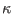
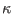
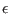
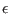
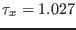
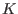
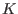

Next: Some entrainment scenarios Up: Idealised scenarios Previous: Pressure-gradient driven channel flow Contents
In this scenario, it is demonstrated how the effect of breaking surface waves is parameterised in one- and two-equation models. This is usually done by injecting turbulent kinetic energy (TKE) at the surface, see Craig and Banner (1994) and Craig (1996). The rate of TKE injected is proportional to the surface friction velocity cubed, as defined in (211). Injection of TKE at the surface leads to a thin surface boundary layer, in which the vertical transport of TKE and its dissipation approximately balance. This layer is sometimes called the transport layer. Even though there can be considerable shear in this layer, shear-production of turbulence is negligible by definition (also see section 4.7.4).
Different types of models are available in GOTM for the wave-breaking scenario. The key change in gotmturb.nml for runs with TKE injection is to set ubc_type = 2, telling GOTM to set the type of the upper boundary to TKE injection. The decay rates of the TKE and the dissipation rate in the wave-affected layer are then an natural outcome of the model. Note that with the KPP model, this scenario cannot be run.
If you want to simulate wave breaking with a model of this type,
simply copy all files from prescribed_nml/ to the current
directoy, and run GOTM. A dynamic equation for  is used, but the
length scale is fixed, and prescribed by a triangular shape with slope
 (length_scale_method = 2 in gotmturb.nml, see
section 4.19).
is used, but the
length scale is fixed, and prescribed by a triangular shape with slope
 (length_scale_method = 2 in gotmturb.nml, see
section 4.19).
A numerical solution of the  - model can be obtained by
copying the files in
- model can be obtained by
copying the files in
kepspilon_nml to the current
directory, and insuring that compute_kappa = .true. and sig_peps = .false. in gotmturb.nml. Because the spatial decay
rate of the TKE is very large for this model, the wave-affected layer
is very small, and of the order of only a few tens of centimeters for
this scenario. As discussed by Umlauf et al. (2003), this
disadvantage can be overcome by using the  -
- model with
parameters given in gotmturb.nml in the directory komega_nml/. The decay rates of this model nicely correspond to
those measured in the laboratory grid strirring experiments. The
Mellor-Yamada model has also been investigated by
Umlauf et al. (2003), but for this model, again, decay was shown to
be too strong. In addition, the decay rate depends in an unphysical
way on the wall-function required in this model.
model with
parameters given in gotmturb.nml in the directory komega_nml/. The decay rates of this model nicely correspond to
those measured in the laboratory grid strirring experiments. The
Mellor-Yamada model has also been investigated by
Umlauf et al. (2003), but for this model, again, decay was shown to
be too strong. In addition, the decay rate depends in an unphysical
way on the wall-function required in this model.
If you want to simulate wave breaking with this model, simply copy the files from kepspilon_nml/ to the current directory, and make sure that you set compute_kappa = .false. and sig_peps = .true. in gotmturb.nml. Results are quite similar to those with the prescribed length scale.
In all cases a surface-stress of
 Nm was
applied. After a runtime of 2 days, a steady-state with a constant
stress over the whole water column of 20 m depth is reached. The wave
affected layer can be found in the uppermost meter or so, and because
of the strong gradients in this region we used a refined grid close to
the surface. The parameters for such a `zoomed grid' can be set in the
input file gotmmean.nml according to the decription in
section 3.3. If you want to compare the computed profiles
with the analytical solutions in (110), you'll need a
specification of the parameter . This parameter is computed in k_bc() to be found in turbulence.F90, where you can add a few
FORTRAN lines to write it out.
was
applied. After a runtime of 2 days, a steady-state with a constant
stress over the whole water column of 20 m depth is reached. The wave
affected layer can be found in the uppermost meter or so, and because
of the strong gradients in this region we used a refined grid close to
the surface. The parameters for such a `zoomed grid' can be set in the
input file gotmmean.nml according to the decription in
section 3.3. If you want to compare the computed profiles
with the analytical solutions in (110), you'll need a
specification of the parameter . This parameter is computed in k_bc() to be found in turbulence.F90, where you can add a few
FORTRAN lines to write it out.